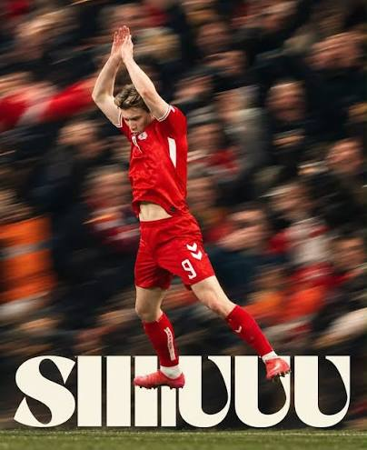
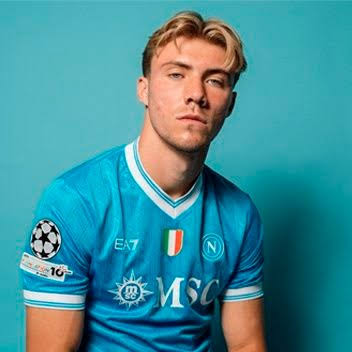

Striker || Denmark
Penyerang muda asal Denmark yang dikenal dengan kecepatan, tenaga, dan insting mencetak golnya di depan gawang.
Lihat Profil
Lahir
4 Feb 2003
Asal
Denmark
Posisi
Striker
Tinggi
191 cm
Sturm Graz (2022)
Klub profesional pertamanya di luar Denmark.
Atalanta (2023)
Bermain di Serie A Italia.
Manchester United (2023 - 2025)
Merumput di Premier League Inggris.
Napoli (2025)
Kembali ke Serie A dengan jersey biru khas Napoli.
